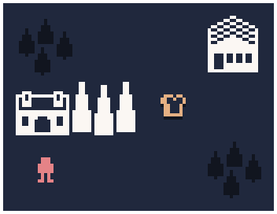
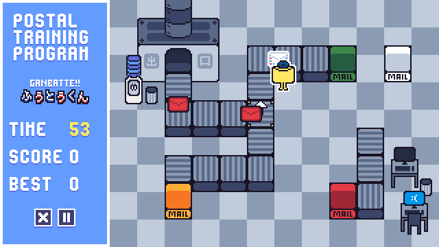
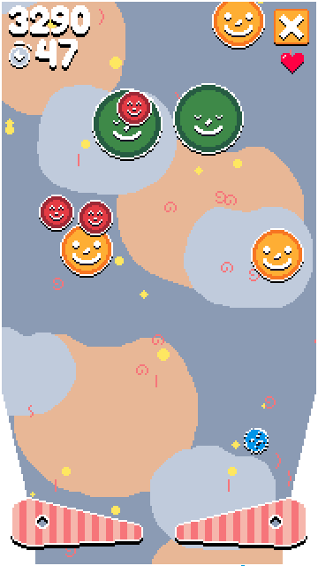

PARIS FLEMING
Hi, I like to make things and post them on the internet; usually games, designs, and other digital goodies!
私のファミカセ展 | MY FAMICASE EXHIBITION, 2021
My Famicase (私のファミカセ展) is a yearly exhibit run by the METEOR gallery in Tokyo, Japan, which challenges designers all over the world to invent an imaginary, long-forgotten NES (Nintendo Entertainment System) / Famicom game and design a cartridge label around the idea. The gallery then takes these labels and produces actual, physical mockups of what the games might look like for their in-person exhibit! See my submission (right), which was featured in this year's show, or browse the rest of the designs at the link below.
BREAD GAME, 2021
Originally created as a light joke, intending to address the apparent shortage of bread-themed computer games, "Bread Game" is a high-speed simulation game about delivering bread to your fellow townsfolk under the moonlight. Pick up loaves at the local bakery and distribute your bounty as efficiently and swiftly as possible. A number will appear above each household showing how many loaves of bread are awaited for delivery. Continue to supply the goods, because households waiting too long for a maximum order of 10 loaves will cause you to game over!
POSTAL TRAINING PROGRAM, 2020
So, you wanna join the Postal Service, eh? Well then, you gotta' prove your worth through the Postal Training Program! Hone your organizational abilities through wild mail-sorting gameplay, and work your way up the ranks. This game was created for the 2020 A Game By Its Cover game jam by myself and the wonderfully talented musician AJ Booker, based on an entry to the 2020 My Famicase Exhibition. See the link below for more details!
STARSPLOSION, 2020
Starsplosion was the product of my wanting to create a fun, fast-paced arcade-style game while working on a bigger unannounced project. Along the way, Starsplosion allowed me to learn a lot about game dev! In the game, you'll launch and smash your way through an onslaught of celestial objects, collect power ups, and amass space dust in your journey through the cosmos. This arcade-style game blends classic pinball and shoot 'em up mechanics, and requires quick reflexes and careful precision in order to score big.
OTHER THINGS
Well, if you've scrolled this far, then I suppose I should direct you to my itch.io page, where I've been keeping all my little game dev-related projects. I can tell you that I'm hard at work on the next adventure, but for now, I hope these can satisfy your curiosity. Check back regularly, or feel free to drop me a line by email or on Twitter in order to see what I'm currently up to! ♡